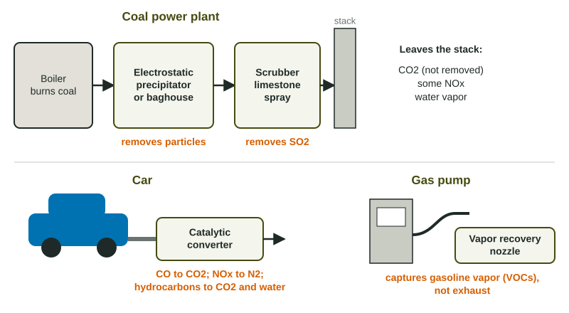

Reduction of Air Pollutants
Air pollutants are cut by using cleaner fuel, burning it better, or capturing pollutants after burning.
Part 1 · Hook
Why this matters
Part 2 · Before you start
What this builds on
Part 3 · Prerequisite check
Quick check before you start
1. Which pollutant is released mainly by burning coal?
- Sulfur dioxide
- Ozone
- Radon
- Formaldehyde
Show the answer
Sulfur in coal becomes SO2 when it burns.
- Correct: Sulfur dioxide:
- Ozone:
- Radon:
- Formaldehyde:
2. What two ingredients react in sunlight to form photochemical smog?
- NOx and VOCs
- SO2 and CO2
- CO and lead
- Radon and dust
Show the answer
NOx and VOCs in sunlight make ground-level ozone.
- Correct: NOx and VOCs:
- SO2 and CO2:
- CO and lead:
- Radon and dust:
Part 4 · See it
See it first

Part 5 · Step by step
How it works, step by step
- A law or rule sets a limit on a pollutanta plant or carmaker must cut its emissions
- They choose a method: cleaner fuel before burning, better burning, or a device after burningthe pollutant is prevented, changed, or captured
- Scrubbers capture SO2, precipitators and baghouses capture particles, catalytic converters change CO, NOx and hydrocarbonsless of each pollutant leaves the stack or tailpipe
- Less SO2, NOx, VOCs and particles in the airless smog, fewer acid-forming gases and fewer lung and heart problems
Part 6 · Key ideas
Key ideas
- Coal plants: scrubbers (wet or dry, often limestone) remove SO2; electrostatic precipitators and baghouse filters remove particles. Low-sulfur coal and fluidized bed combustion also cut SO2; cooler burning cuts NOx.
- Cars: catalytic converters turn CO into CO2, NOx into N2, and hydrocarbons into CO2 and water. Vapor recovery nozzles capture gasoline vapor (VOCs) at the pump, not exhaust.
- Policies: emission limits, cap-and-trade permits, fuel standards, tax credits for clean energy, and transit that cuts driving. A policy is a rule; a device is a technology.
- None of these devices removes CO2. Cutting CO2 means burning less fossil fuel.
Part 7 · Misconception
A common mistake
The wrong idea: Vapor recovery nozzles at gas pumps clean the car's exhaust.
What actually happens: Vapor recovery nozzles capture gasoline vapor (VOCs) pushed out of the tank while it fills. Exhaust is cleaned by the catalytic converter.
Part 8 · Check yourself
Check yourself
Exam-style questions. Anything you miss goes into your review queue.
1. Which device in a car changes carbon monoxide, nitrogen oxides and unburned hydrocarbons into less harmful gases?
- A wet scrubber
- An electrostatic precipitator
- A catalytic converter
- A vapor recovery nozzle
Show the answer
A catalytic converter uses metal catalysts to turn CO into CO2, NOx into nitrogen gas, and hydrocarbons into CO2 and water.
- A wet scrubber: Scrubbers are used on smokestacks to remove SO2.
- An electrostatic precipitator: Precipitators remove particles from smokestack gases.
- Correct: A catalytic converter: Right: its catalysts change CO, NOx and hydrocarbons into less harmful gases.
- A vapor recovery nozzle: These nozzles capture gasoline vapor at the pump, not exhaust.
2. How does an electrostatic precipitator remove particles from a smokestack?
- It sprays a limestone slurry that reacts with the particles
- It charges particles and collects them on plates
- It forces the gas through fabric bags that trap the particles
- It uses a catalyst to change particles into harmless gases
Show the answer
It gives the particles an electric charge, then collects them on plates with the opposite charge. The plates are shaken clean and the ash is collected.
- It sprays a limestone slurry that reacts with the particles: A limestone spray is a scrubber, used mainly for SO2.
- Correct: It charges particles and collects them on plates: Right: opposite charges attract the particles out of the gas.
- It forces the gas through fabric bags that trap the particles: Fabric bags describe a baghouse filter, a different device.
- It uses a catalyst to change particles into harmless gases: Catalysts change gases in car exhaust; they do not remove particles.
Data
A coal power plant before and after new pollution controls
| Pollutant | Before controls | After controls | Control added |
|---|---|---|---|
| Sulfur dioxide (SO2) | 40,000 | 2,000 | wet scrubber |
| Particulate matter | 8,000 | 80 | electrostatic precipitator |
| Nitrogen oxides (NOx) | 12,000 | 9,600 | lower burner temperature |
| Carbon dioxide (CO2) | 6,000,000 | 6,000,000 | none |
3. What percent of the plant's sulfur dioxide does the wet scrubber remove?
Type a number, then its unit (%). Scale words (2.5 million) and powers of ten (2.5 × 10^6) are read.
Show the answer
Removed:
- Answer: 95 %
4. Which pollutant's emissions were cut by the largest percent?
- Sulfur dioxide, cut by the wet scrubber
- Particulate matter
- Nitrogen oxides, by a lower burner temperature
- Carbon dioxide, by the new controls
Show the answer
Particulates fell from 8,000 to 80 metric tons, a 99% cut. SO2 fell 95%, NOx 20%, and CO2 0%.
- Sulfur dioxide, cut by the wet scrubber: The scrubber cut SO2 by 95%, a little less than the particulate cut.
- Correct: Particulate matter: Right: 80 of 8,000 is left, a 99% cut.
- Nitrogen oxides, by a lower burner temperature: NOx fell from 12,000 to 9,600, just 20%.
- Carbon dioxide, by the new controls: CO2 did not change; none of these devices removes it.
5. Why did the new controls not lower the plant's CO2?
- The devices remove SO2 and particles, not CO2
- The scrubber turns the SO2 into extra CO2
- CO2 is a particle that the precipitator missed
- Less CO2 forms when coal burns at a lower temperature
Show the answer
Scrubbers and precipitators remove SO2 and particles. CO2 is the main product of burning carbon in coal, and the plant burns the same coal, so it releases the same CO2.
- Correct: The devices remove SO2 and particles, not CO2: Right: burning the same coal makes the same CO2.
- The scrubber turns the SO2 into extra CO2: Limestone scrubbers release a little CO2, but that is not why the CO2 stayed level here.
- CO2 is a particle that the precipitator missed: CO2 is a gas, not a particle.
- Less CO2 forms when coal burns at a lower temperature: Lowering burner temperature cuts NOx; CO2 still forms from the carbon.
6. What does a vapor recovery nozzle on a gas pump capture?
- Exhaust from the car's tailpipe while the engine idles
- Sulfur dioxide from the gasoline in the pump hose
- Particles of dust from the station forecourt
- Gasoline vapor pushed out as the tank fills
Show the answer
When you fill a tank, gasoline vapor (VOCs) is pushed out. The nozzle captures the vapor and returns it to the station's storage tank. It does not touch the car's exhaust.
- Exhaust from the car's tailpipe while the engine idles: This is the common mix-up; the nozzle never touches exhaust.
- Sulfur dioxide from the gasoline in the pump hose: Gasoline is low in sulfur, and the nozzle captures vapor, not SO2.
- Particles of dust from the station forecourt: The nozzle captures fuel vapor, not dust.
- Correct: Gasoline vapor pushed out as the tank fills: Right: it captures VOCs at the pump and returns them to storage.
7. Explain how a catalytic converter reduces smog, naming the pollutant it changes and what it becomes.
Build the answer part by part, then write it in your own words.
Show the answer
The answer names a smog ingredient the device removes (NOx) and what it becomes (nitrogen gas), so it says how the benefit works.
- An answer that earns the point: A catalytic converter changes nitrogen oxides into nitrogen gas and oxygen, which reduces smog because less NOx is left to react with VOCs in sunlight to form ozone.
Part 9 · Summary
Summary
Part 10 · Up next
What comes next
Part 11 · Connections